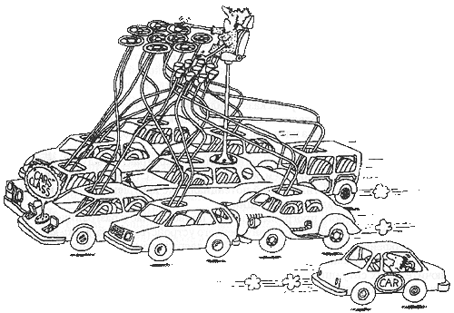

Класс
Класс — это элемент ПО, описывающий абстрактный тип данных и его частичную или полную реализацию. Другие абстрактные типы данных — метаклассы, интерфейсы, структуры, перечисления, — характеризуются какими-то своими, другими особенностями. Наряду с понятием «объекта» класс является ключевым понятием в ООП (хотя существуют и бесклассовые объектно-ориентированные языки, например, Self, Lua; подробнее смотрите Прототипное программирование). Суть отличия классов от других абстрактных типов данных состоит в том, что при задании типа данных класс определяет одновременно как интерфейс, так и реализацию для всех своих экземпляров, а вызов метода-конструктора обязателен. Точный смысл этой фразы будет раскрыт ниже.
На практике объектно-ориентированное программирование сводится к созданию некоторого количества классов, включая интерфейс и реализацию, и последующему их использованию. Графическое представление некоторого количества классов и связей между ними называется диаграммой классов. Объектно-ориентированный подход за время своего развития накопил множество рекомендаций (паттернов) по созданию классов и иерархий классов.